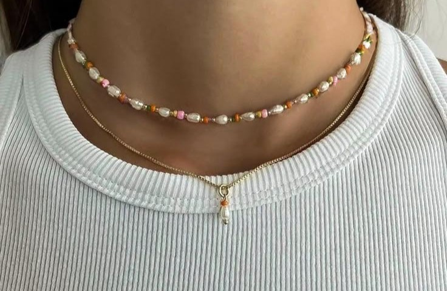

Sådan gør du
Usikker på hvordan du kommer i gang? Bare rolig, for med denne trin-for-trin guide kommer vi godt og trygt igennem processen til dit personlige diy-perlesmykke.
Trin 1: Vælg dine smykker:
Om end du laver et armbånd, halskæde eller øreringe - Valget er helt op til dig.
Trin 2: Vælg perler
Kig endelig forbi #Perlegalleriet for mere inspiration.
Trin 3: Slå dig løs
Lad kreativiteten blomstrer og tankerne flyde. Kun kreativiteten sætter grænser.

Trin 4: Sæt lås på og voila
Uanset om perlesmykket er til dig selv eller en du kender, kan du stolt vise det frem til verden.